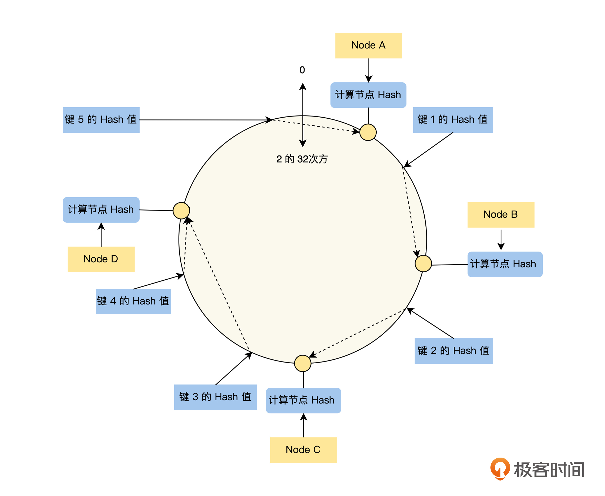
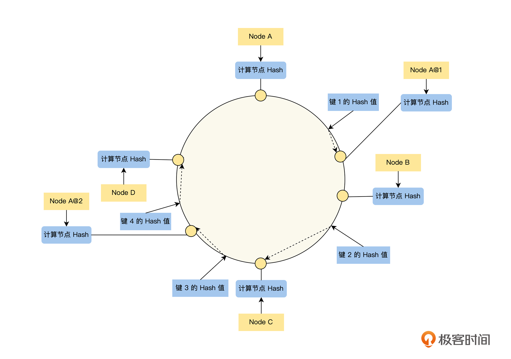

- 00 开篇词 掌握好学习路径，分布式系统原来如此简单.md.html
- 01 导读：以前因后果为脉络，串起网状知识体系.md.html
- 02 新的挑战：分布式系统是银弹吗？我看未必！.md.html
- 03 CAP 理论：分布式场景下我们真的只能三选二吗？.md.html
- 04 注册发现： AP 系统和 CP 系统哪个更合适？.md.html
- 05 负载均衡：从状态的角度重新思考负载均衡.md.html
- 06 配置中心：如何确保配置的强一致性呢？.md.html
- 07 分布式锁：所有的分布式锁都是错误的？.md.html
- 08 重试幂等：让程序 Exactly-once 很难吗？.md.html
- 09 雪崩（一）：熔断，让故障自适应地恢复.md.html
- 10 雪崩（二）：限流，抛弃超过设计容量的请求.md.html
- 11 雪崩（三）：降级，无奈的丢车保帅之举.md.html
- 12 雪崩（四）：扩容，没有用钱解决不了的问题.md.html
- 13 可观测性（一）：如何监控一个复杂的分布式系统？.md.html
- 14 可观测性（二）：如何设计一个高效的告警系统？.md.html
- 15 故障（一）：预案管理竟然能让被动故障自动恢复？.md.html
- 16 故障（二）：变更管理，解决主动故障的高效思维方式.md.html
- 17 分片（一）：如何选择最适合的水平分片方式？.md.html
- 18 分片（二）：垂直分片和混合分片的 trade-off.md.html
- 19 复制（一）：主从复制从副本的数据可以读吗？.md.html
- 20 复制（二）：多主复制的多主副本同时修改了怎么办？.md.html
- 21 复制（三）：最早的数据复制方式竟然是无主复制？.md.html
- 22 事务（一）：一致性，事务的集大成者.md.html
- 23 事务（二）：原子性，对应用层提供的完美抽象.md.html
- 24 事务（三）：隔离性，正确与性能之间权衡的艺术.md.html
- 25 事务（四）：持久性，吃一碗粉就付一碗粉的钱.md.html
- 26 一致性与共识（一）：数据一致性都有哪些级别？.md.html
- 27 一致性与共识（二）：它们是鸡生蛋还是蛋生鸡？.md.html
- 28 一致性与共识（三）：共识与事务之间道不明的关系.md.html
- 29 分布式计算技术的发展史：从单进程服务到 Service Mesh.md.html
- 30 分布式存储技术的发展史：从 ACID 到 NewSQL.md.html
- 春节加餐 技术债如房贷，是否借贷怎样取舍？.md.html
- 春节加餐 深入聊一聊计算机系统的时间.md.html
- 春节加餐 系统性思维，高效学习和工作的利器.md.html
- 结束语 在分布式技术的大潮流中自由冲浪吧！.md.html
- 捐赠
05 负载均衡：从状态的角度重新思考负载均衡
你好，我是陈现麟。
通过学习“注册发现”的内容，你已经明白了分布式系统为什么需要注册发现组件，也知道了在实现注册发现时要注意的两个关键点，并且理解了从 CAP 理论的角度来说，注册发现是一个 AP 模型。如果我们想把极客时间这个单体服务，改造成一个分布式系统，那么这些内容都将为我们打下一个良好的基础。
同时，极客时间为了实现系统的高可用和高性能，它所有的服务都会部署多个实例，那么这就会导致在极客时间的后端系统，调用方通过注册发现组件，去获得被调用服务实例的网络地址时，获取到包含多个服务实例的网络地址列表。这时你将面临一个新的问题，那就是调用方应该将请求，发向被调用服务的哪一个服务实例呢？
在本节课里，我们就一起来解决分布式系统中，多个被调用服务实例的选择问题，即负载均衡策略。我们会先从负载均衡在架构设计中需要考虑的关键点出发，根据负载均衡策略是否关心请求中携带的信息，即请求是否有状态，将负载均衡策略分为无状态的负载均衡、半状态的负载均衡和全状态的负载均衡，从状态的角度来重新思考。
负载均衡的关键点
每一个被调用服务（后面简称为后端服务）都会有多个实例，那么服务的调用方应该将请求，发向被调用服务的哪一个服务实例，这就是负载均衡的业务场景。
关于如何解决这个问题，我们可以换一个角度，站在被调用服务实例（后面简称为后端实例）的角度理解负载均衡。对于后端实例组来说，负载均衡就是一个调度器，它将发送给被调用服务的每一个请求，按一定的策略分配给后端实例组中的一个实例，确保能高效、正确地提供服务。
根据上面的讨论，我们可以得出，负载均衡需要达到的目的是“确保能高效、正确地提供服务”，同时从这个目的中，我们还可以分析出负载均衡的两个关键点。
首先，我们结合“高效地提供服务”这个目的来分析。如何高效地提供服务，我认为可以理解为后端实例组多个实例的资源运行效率问题。负载均衡需要考虑到各个实例性能差异的情况，让每一个实例都能充分发挥它的能力，不要出现一些实例负载比较高，而另一些实例的负载却非常低的情况，这样会造成资源浪费。
所以，我们从中可以得出，负载均衡的第一个关键点是公平性，即负载均衡需要关注被调用服务实例组之间的公平性，不要出现旱的旱死，涝的涝死的情况。
接着，我们来讨论一下“正确地提供服务”这个目的。如何正确地提供服务，我认为这是后端服务对外表现出的整体结果。负载均衡需要确保外部对后端服务的请求，一定能被路由到可以提供正确服务的实例上。如果后端实例是有状态的，比如需要利用本地缓存和存储来处理请求的，我们就需要考虑每个请求携带的状态，然后依据状态信息，将请求正确路由到后端的实例上。
从这里我们可以得出，负载均衡的第二个关键点是正确性，即对于有状态的服务来说，负载均衡需要关心请求的状态，将请求调度到能处理它的后端实例上，不要出现不能处理和错误处理的情况。
我们已经讨论出了负载均衡的两个关键点：公平性和正确性。所以，在后面讨论负载均衡各种不同的策略时，我们将采用公平性和正确性这两个维度，来评价每一种负载均衡策略的具体情况。
为了更好地实现负载均衡的公平性和正确性，针对各种不同的业务场景，出现了多种不同的策略。在这些不同的业务场景中，我认为对负载均衡策略的设计，影响最大的因素是后端实例是否存在状态，后端实例有状态，负载均衡就需要关心请求的状态。
如果一个有状态的请求，被路由到错误的后端实例上，将会导致请求无法处理或者获得错误的结果。比如一个查询用户年龄的请求，如果负载均衡策略将该请求，错误地路由到一个没有存储该用户年龄数据的实例上，那么这个实例就只能返回 not found 。对于有状态的请求，如果路由错误，就会影响负载均衡的正确性。
因此我们会在下文中，依据负载均衡是否关心请求的状态，将负载均衡策略分为无状态的负载均衡、半状态的负责均衡和全状态的负载均衡，结合负载均衡的两个关键点一一进行分析。
无状态的负载均衡
无状态的负载均衡是我们日常工作中接触最多的负载均衡模型，它指的是参与负载均衡的后端实例是无状态的，所有的后端实例都是对等的，一个请求不论发向哪一个实例，都会得到相同的并且正确的处理结果，所以无状态的负载均衡策略不需要关心请求的状态。
到这里，你可能会有一个疑问，这些无状态实例难道不能处理像存储数据这样的状态吗？如果需要处理状态应该怎么办呢？这是一个很好的问题，答案也非常简单。
实例将这些状态信息的处理都交给一个中心存储来负责，比如 MySQL 数据库和 Redis 缓存等，实例不在本地机器的磁盘或者内存中，存储任何状态信息。这是一个非常好的设计原则，让专业的中心存储来处理状态信息，大大简化了系统的设计。
下面我们以轮询和权重轮询来举例，先讲一讲它们的负载均衡策略，再结合公平性和正确性这两个关键点，评价无状态的负载均衡策略的具体情况。
轮询
轮询的负载均衡策略非常简单，只需要将请求按顺序分配给多个实例，不用再做其他的处理。例如，轮询策略会将第一个请求分配给第一个实例，然后将下一个请求分配给第二个实例，这样依次分配下去，分配完一轮之后，再回到开头分配给第一个实例，再依次分配。
轮询在路由时，不利用请求的状态信息，属于无状态的负载均衡策略，所以它不能用于有状态实例的负载均衡器，否则正确性会出现问题。在公平性方面，因为轮询策略只是按顺序分配请求，所以适用于请求的工作负载和实例的处理能力差异都较小的情况。
权重轮询
权重轮询的负载均衡策略是将每一个后端实例分配一个权重，分配请求的数量和实例的权重成正比轮询。例如有两个实例 A，B，假设我们设置 A 的权重为 20，B 的权重为 80，那么负载均衡会将 20% 的请求数量分配给 A，80 % 的请求数量分配给 B。
权重轮询在路由时，不利用请求的状态信息，属于无状态的负载均衡策略，所以它也不能用于有状态实例的负载均衡器，否则正确性会出现问题。在公平性方面，因为权重策略会按实例的权重比例来分配请求数，所以，我们可以利用它解决实例的处理能力差异的问题，认为它的公平性比轮询策略要好。
无状态的负载均衡策略除了上面的两种外，还有 FAIR 、随机、权重随机和最少链接数等策略，你可以从两个关键点出发对这些负载均衡策略进行分析。
半状态的负载均衡
半状态的负载均衡指的是，虽然负载均衡策略利用请求的状态信息进行路由，但是仅仅进行简单的规则处理，比如 Hash 运算加求模来路由请求，它不保证路由的正确性，这个正确性由后端实例来保证。
另外，一些实例会在内存中缓存一些状态数据，用于提升系统的性能，如果一个请求被路由到错误的实例中，该实例可以立即通过中心存储，读取出所需要的数据，然后在内存中重建并缓存正确的处理请求，不会导致请求出现错误。
而对于路由错误，后端实例不能恢复状态数据的场景，后端节点需要适应路由策略来保证数据的正确性，例如基于 Hash 策略路由的 MySQL 集群，如果集群的数目发生变更，我们需要通过数据迁移来保证路由的正确性。
所以，我们可以看出，半状态的负载均衡将请求按一定的策略进行路由，后端实例可以利用路由规则来进行优化。假设后端实例在进程里面缓存用户的信息，如果我们能将同一个用户的多个请求，都路由到同一个实例上，相对于轮询策略，单个实例不需要缓存全部的用户信息，可以大大减少缓存的内存容量。
为了评价半状态的负载均衡策略的具体情况，我们以 Hash 和一致性 Hash 来举例。
Hash
Hash 负载均衡策略是指将请求的状态信息，按一定的 Hash 算法固定分配到一个实例上，例如，按请求的来源 IP 地址或者用户的 ID，将同一个来源 IP 地址或者用户 ID 的请求固定到一个实例上。
我们来举个例子，如果有两个实例，我们想将相同用户 ID 的请求，固定分配到一个实例上面，那么按如下的方法来计算：
\[- \\text { i }=\\operatorname{MD5}\\left(\\text {ID)} \\%2\\right.- \]
这里要说明一下，公式中的 2 为实例的数量，除了 MD5 外，我们还可以使用不同的 Hash 算法。我们将实例从 0 开始编号，上面公式的计算结果 i 为负载均衡将要分配实例的编号。
从这个计算公式中，我们可以看出 Hash 负载均衡策略，在机器实例数量发生变化的时候，几乎所有请求的分配实例都会发送变化。如果后端实例依赖 Hash 负载均衡策略来保证正确性，那么当实例数发生变化的时候，正确性将会出现问题。对于 Hash 策略是如何保证正确性的具体内容，在后面“数据分片”的课程中，我们将会继续讨论。
公平性方面，在不考虑 Hash 算法均匀性的情况下，Hash 策略会按 Hash 值按模等分，它和轮询策略类似，不能解决请求的工作负载和实例的处理能力差异的问题。
一致性 Hash
Hash 的负载均衡策略中，最大的一个问题是基于机器数量求模，如果机器数量发生变化，请求和实例的分配关系机会将全部变化，这会影响它的正确性，而一致性 Hash 就可以用来解决这个问题，你可以结合下图来理解：- 
假设我们定义 Hash 环的空间大小为\(2^{32}\)，那么我们先将 0 ~ \(2^{32}\)均匀地分配到上图的 Hash 环上，将所有的实例按其唯一标识（例如名字的字符串 “ Node A ”）计算在环上的位置：
\[- \\text { iNode }=\\operatorname{hash}\\left(\\text { Node ID) } \\%2^{32}\\right.- \]
然后，对于每一个请求，我们也按上面的方法计算其在环上的位置：
\[- \\text { iRequest }=\\operatorname{hash}\\left(\\text {Request ID) } \\%2^{32}\\right.- \]
最后，按请求在环上的位置沿环顺时针“行走”，遇到的第一个服务器节点，就是该请求负载均衡分配的节点。这里要注意的是，“键 5 ”沿环顺时针“行走”到环的结尾，如果还没有找到服务器节点，将从环的开头继续找，直到找到 Node A 。
你可以看到，一致性 Hash 和 Hash 策略最大的区别在于，一致性 Hash 是对固定值\(2^{32}\)求模，不会随着机器数量的变化而变化，所以对于同一个 Request ID ， iRequest 是始终稳定不变的，这样就解决了 Hash 的策略在实例数量发送变化后，几乎所有的分配关系都会发生变化的问题。
如果一致性 Hash 的机器数量发生变化后，会出现什么问题呢？其实就是发生变化的实例节点逆时针方向的一些请求的路由实例会发生改变，例如 Node A 下线了，那么“键 5 ”将被路由到 Node B ，如果在“键 5 ”和 Node B 之间新增了一个节点，那么“键 5 ”将路由到新增的节点。那么关于一致性 Hash 策略如何保证正确性的问题，我们也是在后面的“数据分片”课程中详细讨论。
到这里，你是不是觉得一致性 Hash 能在后端实例数量变化的时候，依然保持比较好的正确性，已经很完善了呢？
其实还有一个问题，那就是公平性，这里有两点需要我们注意。首先，如果后端实例数非常少，公平性将会出现问题，假设上图中只有 Node B 和 Node C ，那么 Node B 将要承担 70% 以上的请求；其次，如果各个节点的性能差异比较大，这样的情况我们会希望能按权重来进行分配。
关于一致性 Hash 策略公平性的问题，一致性 Hash 是通过增加虚拟节点的方法来解决的，在 Hash 环中路由到虚拟实例的请求，会被路由到它的真实实例上，比如下图中“键 1”和“键 3”的请求将路由到 Node A。- 
对于实例数过少导致的公平性问题，一致性 Hash 策略让每一个实例都生成多个虚拟实例，使分配更加均衡；对于实例之间性能差异的问题，一致性 Hash 策略通过让实例生成虚拟实例的数量，与该实例的权重成正比的策略来解决。
全状态的负载均衡
全状态的负载均衡是指，负载均衡策略不仅利用请求的状态信息进行路由，并且在后端实例有状态的情况下，依然会保证路由的正确性。那它是怎么做到的呢？下面我们就来讨论一下全状态负载均衡的实现。
全状态的负载均衡一般以路由服务的形式存在，在路由服务里面，都会存储后端实例 ID 和状态信息的索引，在进行请求路由的时候，路由服务从请求的状态信息中获得索引的标识，通过查询索引获得后端实例的 ID，然后再进行路由。
如果你了解过“数据分片”机制，你就会发现它和全状态的负载均衡非常类似，其实它们就是一个事情，只是我们讨论的角度不同。如果我们从请求调度的角度来讨论，这就是一个全状态服务的负载均衡问题，如果我们从后端实例数据分布的角度来讨论，这就是一个数据分片的问题。
那么关于全状态的负载均衡策略，我们将放到后面的“数据分片”课程中进行讨论，这里就先不再赘述了。
总结
到这里，我们一起讨论了分布式系统场景下的负载均衡问题，一起来总结一下这节课的主要内容：
首先，我们通过对负载均衡业务场景的讨论，确定了评价负载均衡策略的关键点：公平性和正确性，以后当我们碰到负载均衡策略选型的时候，可以通过公平性和正确性来进行讨论。
然后，我们讨论了后端为无状态实例，常用的无状态的负载均衡策略：轮询、权重和 FAIR 等，学完这部分，你可以为无状态实例来选择合适的负载均衡策略。
接着，我们讨论了后端实例有状态，但是正确性不需要由负载均衡策略来保证的半状态负载均衡策略，常用的半状态的负载均衡策略有：Hash 和一致性 Hash 等，这里我们就知道了，怎么利用负载均衡策略的特点，优化后端服务的性能。
最后，我们讨论了全状态的负载均衡策略，其实全状态的负载均衡和数据分片是同一件事情，只是我们讨论的角度不一样而已，你会发现负载均衡和数据分片之间是有非常多的交集的。
思考题
我们利用 Hash 策略路由的 MySQL 集群，如果需要对集群进行扩容，我们怎么做才能在最少迁移数据的情况下，依然保证路由的正确性呢？
欢迎你在留言区发表你的看法。如果这节课对你有帮助，也推荐你分享给更多的同事、朋友。
© 2019 - 2023 Liangliang Lee. Powered by gin and hexo-theme-book.